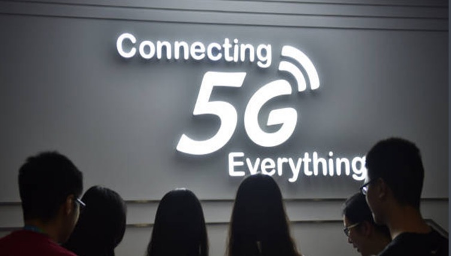

高速无线网速是如何实现的？

2017年1月31日，Qualcomm 与 Telstra、NETGEAR 和爱立信展开合作，在悉尼完成了一场千兆级 LTE 网络测试，测试现场得到了930 Mbps的无线下载速率和127 Mbps的无线上传速率。如此快的无线网速是如何实现的呢？
从2G到5G，无线网速一路飙升，这一切的实现都要感谢一个人，他就是发明电灯泡的托马斯·爱迪生的远房亲戚——克劳德·艾尔伍德·香农。他是谁呢？
痴迷摩斯密码的信息论之父
香农从小就疯狂热爱着无线收音机和摩斯密码。二战期间，他还作为小组成员，参与了“研发数字加密系统”的工作，为丘吉尔和罗斯福的越洋电话会议提供了密码保障，在“追踪和预警德国飞机、火箭对英国的闪电战”中也立过功劳。
战场归来，香农又投入了信息传输的研究中。此时已经有许多科学家致力于量化信息，寻找高效、可靠信息传输的方法。从1837年摩斯发明了有线电报，1928年哈特利在带限信道中，得到了可靠通信的最大“数据信息传输率”，到1942年柯尔莫哥洛夫和维纳发明了最佳线性滤波器，来“清洗信息”。科学家们始终处于摸索的阶段，没有取得实质性的进展。
随后香农发表的《通信的数学原理》彻底改变了这个局面。在《通信的数学原理》中，信源、信息、信息量、信道、编码、解码、传输、接收等一系列基本概念，都有了严格的数学描述。
而这也为今后的移动网络迅猛发展奠定了基础。
无线网速为何如此之快？
好了，该说主题了，无线网速为何能达到如此快的速度？让我们先从香农定理入手吧。香农定理清晰反映出了影响信息传输速率的因素。
香农定理公式
从公式中可以看出，信道容量与信道带宽、信噪比的关系，增大信道带宽或信噪比都可以提高信道容量。
那么通过哪些技术可以提高信道容量呢？下面，就让我们说一说提高无线传输速率的办法——载波聚合技术和MU-MIMO技术。
载波聚合技术
每个无线网络都有一个相对固定的信道带宽，根据香农定理，在信噪比不变的前提下，信息的信道容量也应该是固定的。那么如何在这样情况下提高信息传输速率呢？利用载波聚合技术就能很好的做到了这一点。
虽然一个信道的带宽是固定的，但如果能把多个信道聚合在一起，带宽就会显著增加，让传输速率成倍提升。打个比方，载波聚合就好比“黏合剂”，将零散的频谱粘在一起，从而提供更快的速率。
想象你在通过高速的收费站，如果只有一个收费站，那么单位时间内能通过的车辆数非常有限的，但若同时开放三个收费站，那么单位时间内通过车辆数就会大大提高，从而达到快速通过的效果。载波聚合就是类似的原理，通过增加接收信道的数量，让传输带宽更高，从而让传输速率成倍提升。
MIMO和MU-MIMO
要理解MU-MIMO我们首先要知道什么是MIMO。MIMO技术是指在发射端和接收端同时利用多天线发送和接收信号，通过改善信噪比和空间自由度提高传输速率。要说明MIMO技术的原理，首先我们要回到之前的香农定理。香农定理有一个前提，那就是发射端和接收端都只有一根天线。而当收发两端的天线数量增多时，空间自由度会发生改变，使数据的吞吐量增加。而在这个过程中信噪比也会得到改善，最终的结果就是信道容量会随着天线数量的增加而增大。
MIMO技术就是应用了这一点，为发射设备和接收设备都安装了多根天线，发射端的每一根天线都能够发射独立的信号，信号发出之后，接收端的每一根天线也能够接收，这样就达到了增加网速的效果。
但这又出现了另一个问题：在实际情况中，往往都是多台设备同时连接一台路由器，当连接设备越来越多时，每台设备只能轮流与路由器进行交互，网速就会变得越来越慢。
解决这种问题就需要利用MU-MIMO技术。MU-MIMO是“Multi-User Multiple-Input Multiple-Output”的缩写，即“多用户多入多出技术”。顾名思义，MU-MIMO技术就是一种让你的路由器同时与多个设备沟通的技术，能让路由器与多个设备同时进行MIMO传输。
MU-MIMO会为每个用户的空间位置配置一个预编码向量，就好比是每个用户拥有了自己的编号。在传输信号时，接收端会对信号进行译码，根据自己所在的预编码向量来提取自己的信号。这种方式不但能提高无线信号传输效率，而且设备之间也不会相互干扰。
无线通信技术的推动者
那么在实际生活中，这些技术是否得到了很好的应用呢？
Qualcomm作为无线通信领域的核心企业，一直在推动着无线连接技术的发展。其发布的全球首款千兆级LTE 调制解调器骁龙X16已率先在澳大利亚投入商用，而这也意味着5G时代将要到来。
很多人认为误以为5G只是网速快了一些而已。其实5G不仅是新一代移动技术，更是一种全新网络。高速只是5G最直观的表现，5G的重要性远不止如此，它将构建一个全新的网络平台基础，促使智能设备的快速发展，物联网、车联网、无人机远程遥控、可交互的沉浸式VR等前沿科技都需要5G网络的支持才能给我们带来极致的体验。
试想一下当所有校内设施都连接到云端，AR授课、无人机送餐和VR互动游戏成为现实。5G带来的不仅是极致的网络体验，更是你我生活方式的巨变。